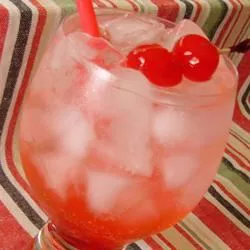

Shirley Temple Recipe

America's Darling Mocktail
A favorite drink for little girls, (grown men like myself,) and party-goers alike. Some grenadines may have alcohol in it, so be sure to check for that before you make this for children.
Ingredients
- 6 fluid ounces lemon-lime flavored soda
- 1 das grenadine syrup
- 1 maraschino cherry (minimum - no upper limit)
Steps
- Into a tall glass, pour soda and grenadine over ice. Add cherry and straw.